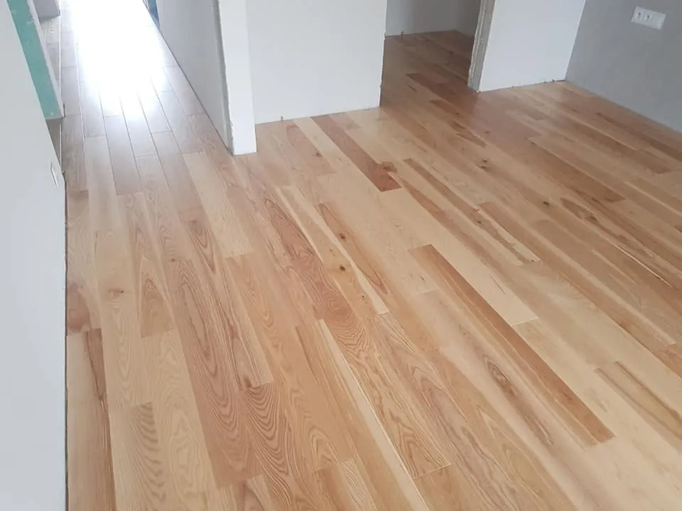

Ułożony i polakierowany parkiet nadaje pomieszczeniu elegancki charakter, ale całość domykają dopiero listwy. Podłoga i listwa tworzą jedną kompozycję, więc warto dobrać je świadomie.

Listwa ma też zadanie techniczne
Przy ścianach zostawia się kilkumilimetrową szczelinę, dzięki której drewno może swobodnie pracować latem i zimą. Listwa tę szczelinę zakrywa. Mocuje się ją do ściany, a nie do podłogi, żeby nie blokować ruchu klepek.
Rodzaje listew
- Listwy profilowane mają ozdobny kształt i pasują do klasycznych wnętrz.
- Listwy cokołowe są wyższe i prostsze, dobrze wyglądają w nowoczesnych mieszkaniach.
- Ćwierćwałki to niewielkie listwy o przekroju ćwiartki koła, często dokładane przy schodach i w miejscach, gdzie liczy się dyskretne wykończenie.
Drewno czy MDF
Listwę drewnianą można polakierować razem z podłogą, w tym samym odcieniu i połysku. Listwy MDF dobrze przyjmują farbę, więc łatwo je dopasować do koloru ścian.
Kolor listwy
Listwę możesz pomalować pod kolor ściany, żeby optycznie powiększyć pomieszczenie, albo wybrać kolor, który podkreśli barwę podłogi i nada jej wyraźniejszą oprawę. Rozwiązań jest wiele, a wybór zależy od twojego gustu i stylu wnętrza.
Listwy drewniane montujemy razem z lakierowaniem, a przy okazji możemy odnowić futryny i drzwi, żeby pasowały do świeżej podłogi.